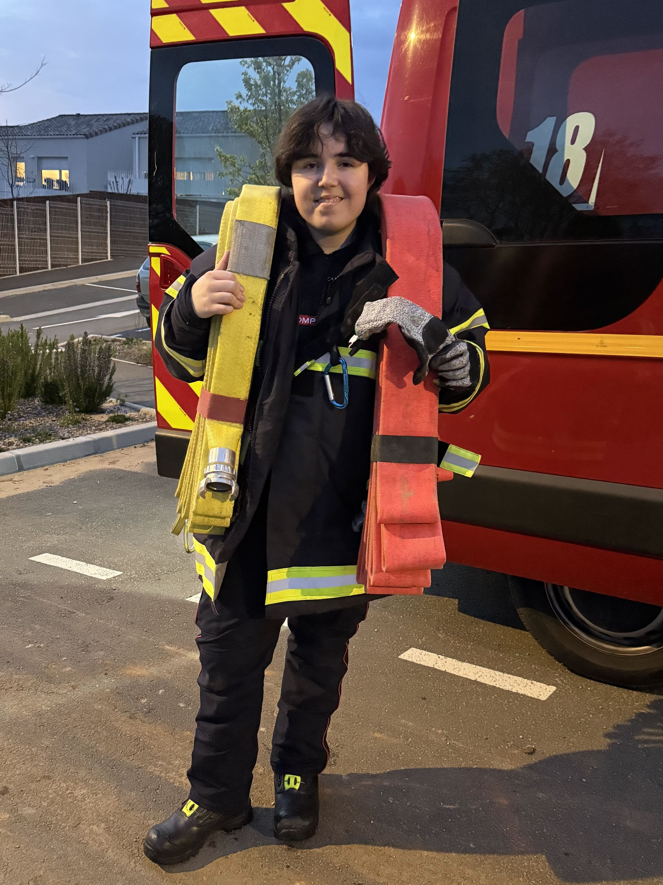
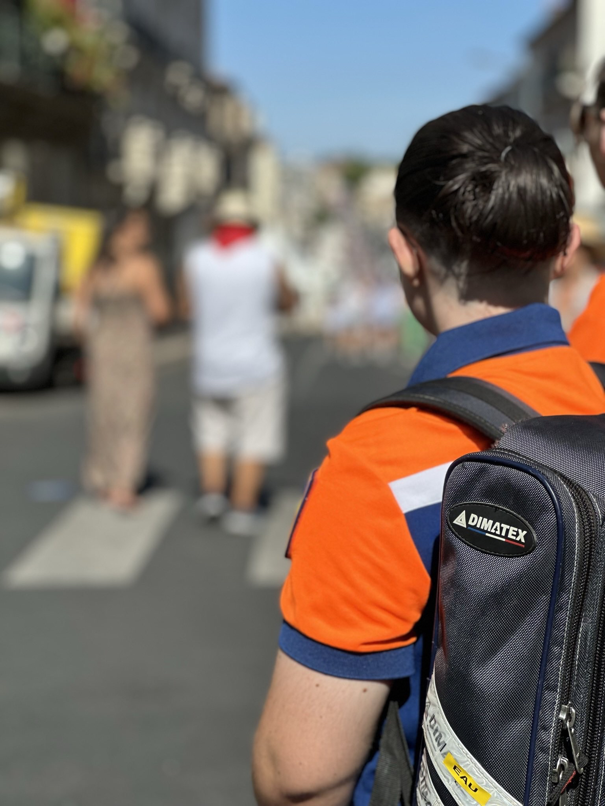
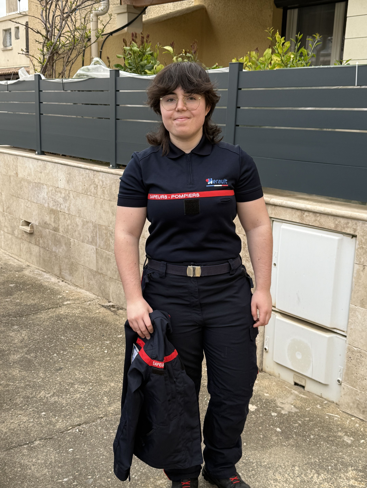

À propos de moi
Actuellement en première année de BTS Services Informatiques aux Organisations (SIO) à l’EPSI de Montpellier, je me spécialise dans le développement et je souhaite poursuivre mes études vers un master en informatique, orienté développement logiciel.
Mon parcours a commencé avec un baccalauréat général spécialités Sciences Économiques et Sociales (SES) et Sciences de la Vie et de la Terre (SVT), obtenu avec mention Assez Bien. Curieuse, investie et passionnée par les technologies, j’ai choisi d’intégrer l’EPSI pour acquérir des compétences solides en programmation et en gestion de projets informatiques.
En parallèle de mes études, je suis engagée depuis plusieurs années dans le monde du secours. J’ai été jeune sapeur-pompier à Servian de mes 12 à 16 ans, une expérience qui m’a transmis rigueur, sens du travail en équipe et goût de l’engagement. Aujourd’hui, je suis pompier volontaire à Corneilhan, mon village voisin, et j’ai également fait partie de la Protection Civile de l’Hérault pendant un an avant d'intégrer le SDIS34 en tant que pompier volontaire.

